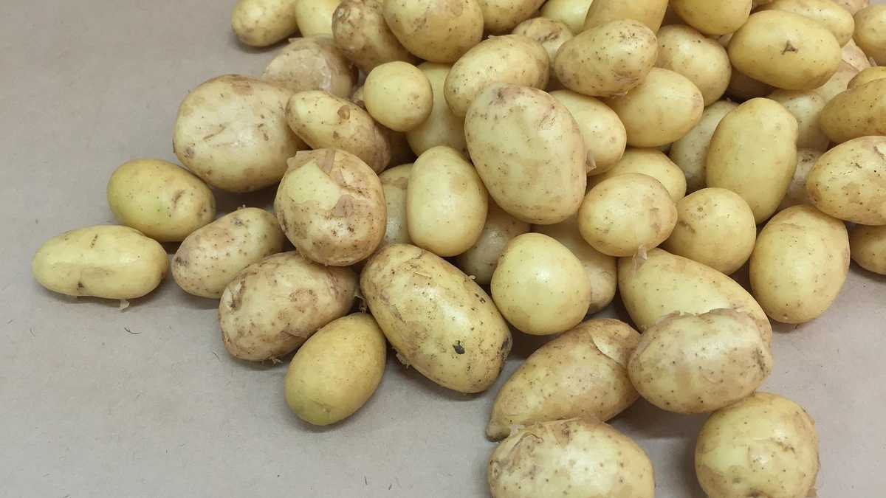

Крок 1
Помити і обібрати картоплю, покришити гарними рівними кубиками.


Помити і обібрати картоплю, покришити гарними рівними кубиками.
Помити і обібрати картоплю, покришити гарними рівними кубиками.Помити і обібрати картоплю, покришити гарними рівними кубиками.
Помити і обібрати картоплю, покришити гарними рівними кубиками.Помити і обібрати картоплю, покришити гарними рівними кубиками.